東京大学 Global Hydrology Group
東京大学Global Hydrology Group (GHG)は、ローカルからグローバルまでの多様な時空間スケールで「水文学」の幅広い要素を扱う、東京大学の先端的研究基盤です。
東京大学内の様々な組織（生産技術研究所、工学系研究科・社会基盤学専攻、新領域創成科学研究科、大気海洋研究所、総合文化研究科・国際環境学コースなど）にまたがる研究グループで、地球水循環に関わる幅広い研究と教育に取り組んでいます。
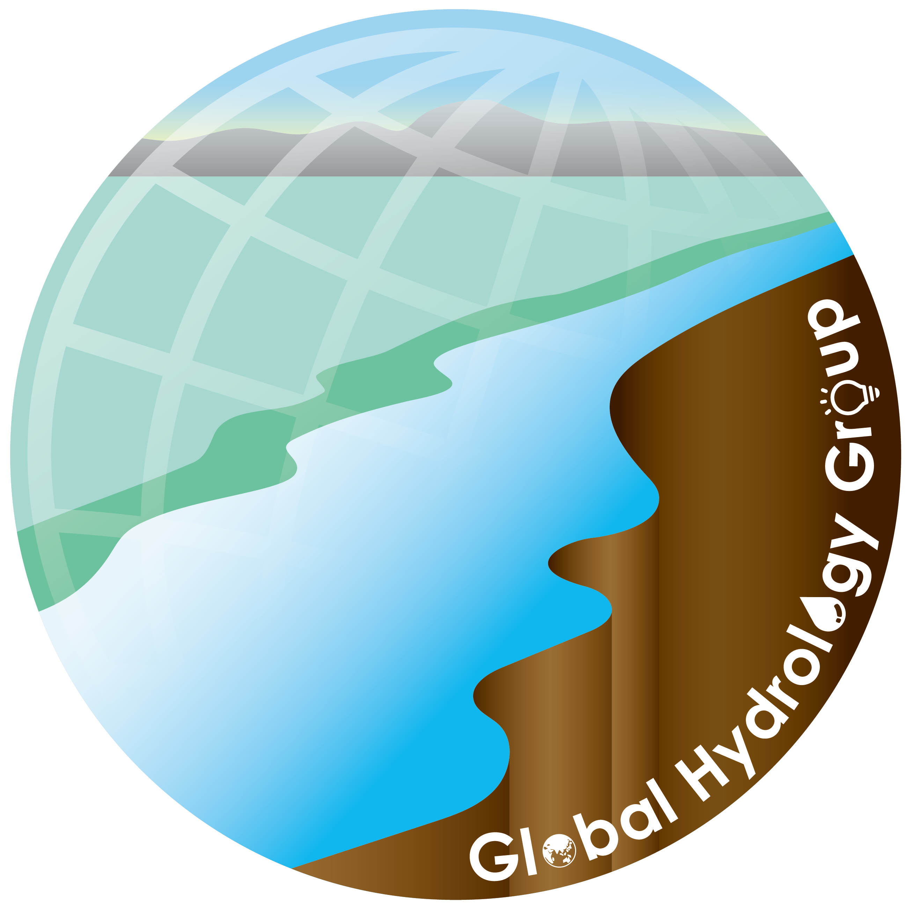
ミッション
自然環境と人間社会において不可欠な資源である地球上の水について理解を深めることは、気候変動や洪水・干ばつなど水に関わる様々な課題を解決する上で重要です。
Global Hydrology Groupでは「水に関する学問の継承発展と社会への貢献」を使命に掲げ、水循環・水資源とそれらの人間活動との相互作用に関する最先端の研究を行っています。
How to Join?
GHGに参加するには？
Global Hydrology Groupは東京大学の３キャンパスに拠点があります。 芳村研究室（柏）、山崎研究室（駒場）、沖研究室（本郷）で参加方法が異なるので、 詳しい情報は各研究室のWebPageを見てください。
Isotope Hydrometeorology, Yoshimura Lab
同位体水文気象学研究室（芳村研究室：柏キャンパス）
芳村研究室では、水循環システムの理解や気候予測、そして水災害の抑止に貢献する研究に取り組んでいます。 主な手法は地上及び衛星観測と水循環モデリング、そして両者を融合するデータ同化です。 特に水同位体比情報を用いたグローバルな水循環研究や、地球システムモデル用の陸域モデルの開発で世界をリードする成果を出しています。 近年では、機械学習による気象予測や古気候復元など、幅広いトピックも扱っています。
Global Hydrodynamics, Yamazaki Lab
全球陸域水動態研究室（山崎研究室：駒場２キャンパス）
山崎研究室は、河川・湖沼・湿地・地下水など陸域のあらゆる水の動態が研究対象で、モデリング・衛星観測・データ分析を主な研究ツールとしています。 グローバルな河川モデルによる水動態シミュレーションで世界をリードしており、気候モデル開発・気候変動影響評価・衛星水循環モニタリングにも取り組んでいます。 陸域水動態モデリングの世界的研究拠点で、海外からの学生・スタッフ・ビジターも多数集まる国際的な研究室です。
Human Geo-Science Lab, Oki Lab (HGSL)
地球人間圏研究室（沖研究室：本郷キャンパス）
私たちの研究室では、自然と人間社会の基本原理の総合的な理解のために研究を行っています。 水に関する学問の継承と社会への普及を社会的使命として掲げており、河川水文学、地球規模水循環システム科学、 世界ならびに日本の水問題解決に関する研究に取り組んでいます。さらに水を対象とした研究だけでなく、 社会科学や経済学、心理学などさまざまな学問を駆使し、社会に大きく貢献するもの、長期的に有用・有意義なもの、 新たな学問体系の構築に資するものを幅広く研究対象としています。多様な人材を包摂し、 様々な分野で世界最先端の研究開発に触れることが可能な研究室です。
研究室の雰囲気
数値シミュレーションやデータ分析が中心の研究室ですが、地球水循環をより深く理解するための現地視察や、 国際的・学際的なワークショップなど、様々な研究アクティビティを行っています。
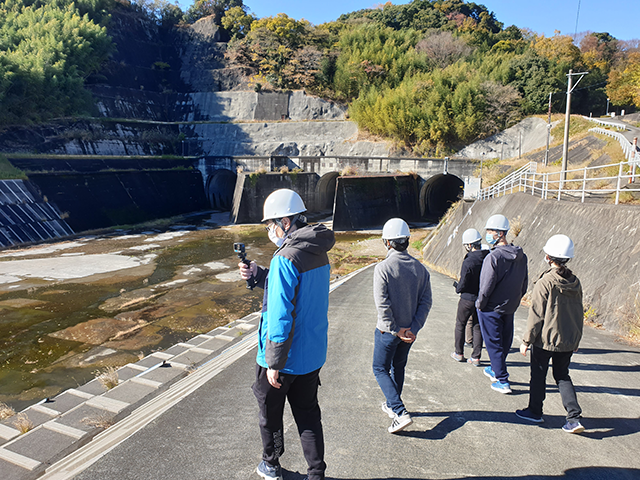
狩野川放水路の見学＠伊豆
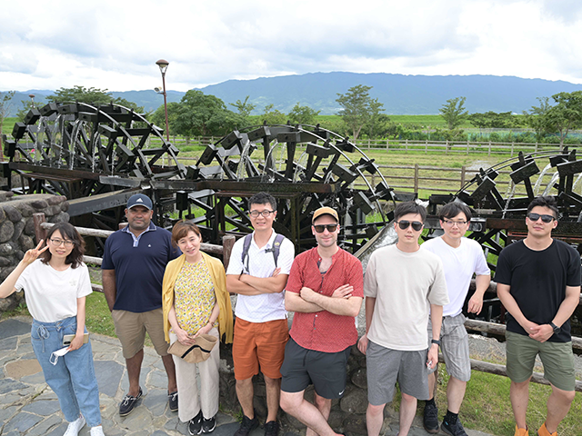
三連水車の見学＠福岡
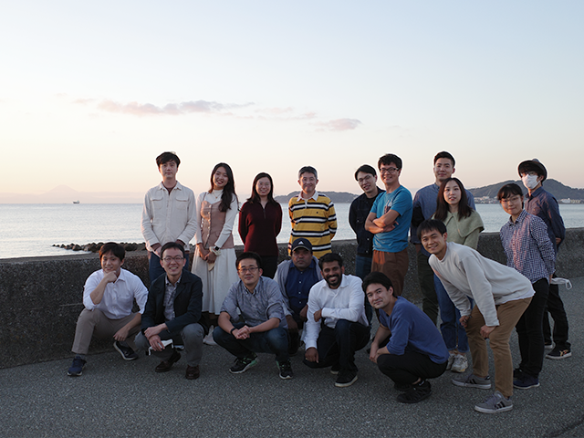
フィールド調査＠館山
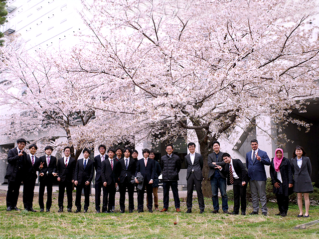
卒業生送別会
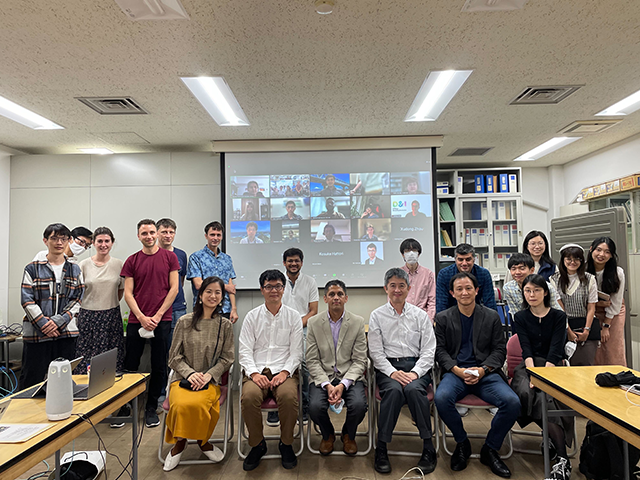
海外大教授を招いたセミナー
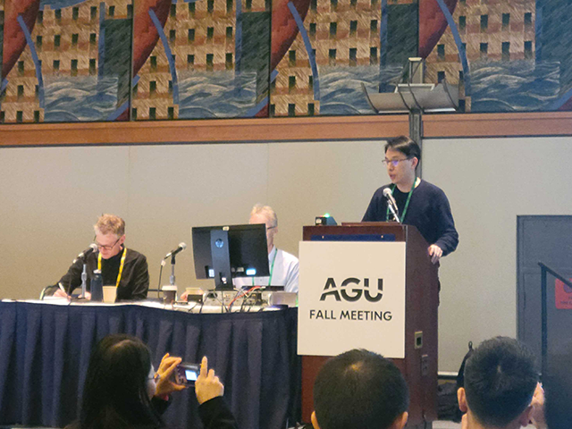
国際学会での発表
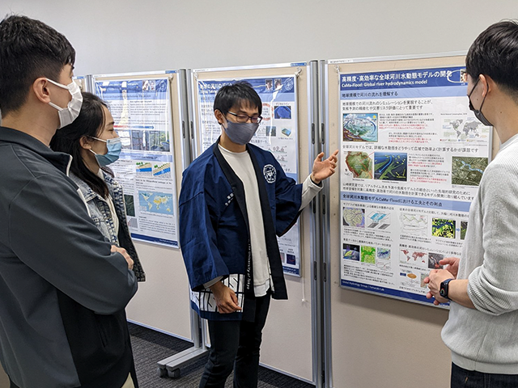
駒場祭での展示
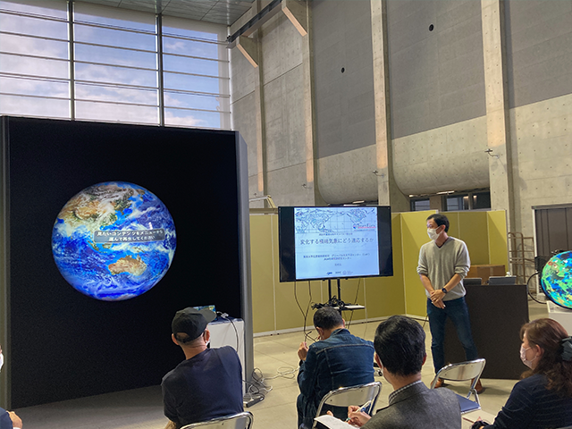
デジタル地球儀@柏キャンパス公開
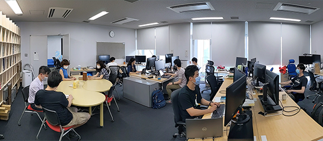
駒場での研究風景
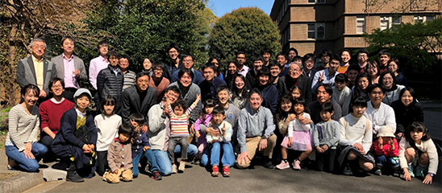
明水会（OB/OGの集い）
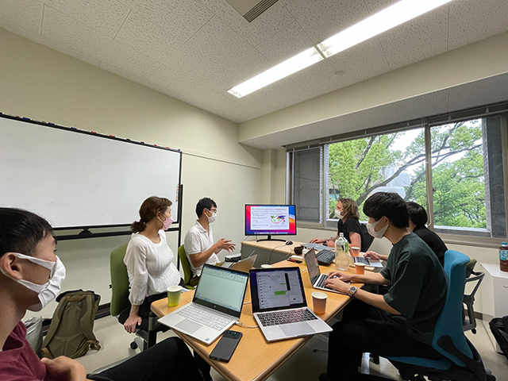
神戸大学と合同ワークショップ
研究対象
ローカルからグルーバルまでの多様な時空間スケールで幅広い領域にまたがる「水文学」の研究を実施しています。
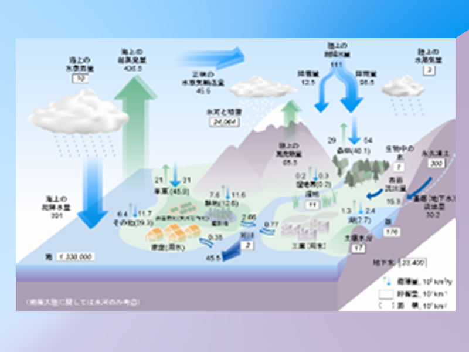
地球水循環の把握
地球上のどこにどのくらいの水がどのような形態で存在し、それらが季節的・長期的にどう変動しているのか？
観測やデータ解析で捉えます。
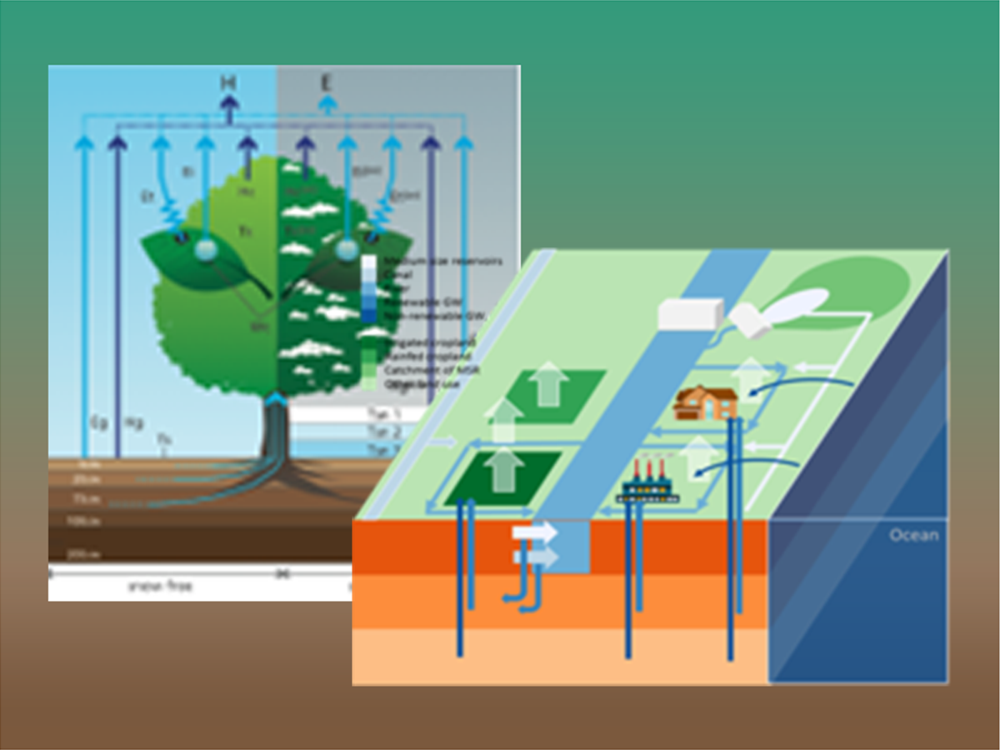
地球水循環のモデリング
地球水循環の変化/変動を支配するプロセスは？ 人間活動や気候変動の影響は？
水循環のモデリングを通して、そのメカニズムを理解します。
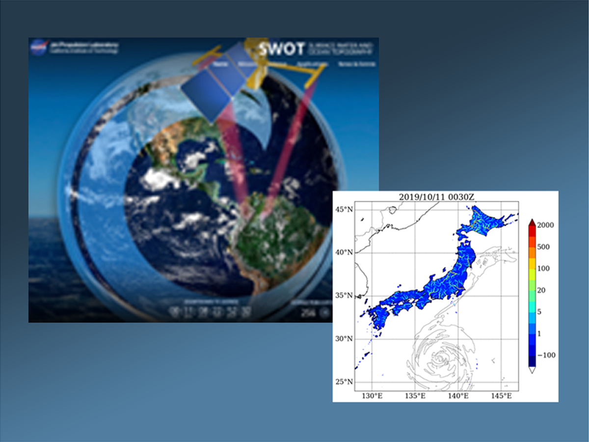
地球水循環の予測
地球規模の水循環の変動をモニタリングできるか？ 過去の気候を復元し、将来を予測できるか？
シミュレーションやデータ統融合アプローチで水循環の実態に迫ります。
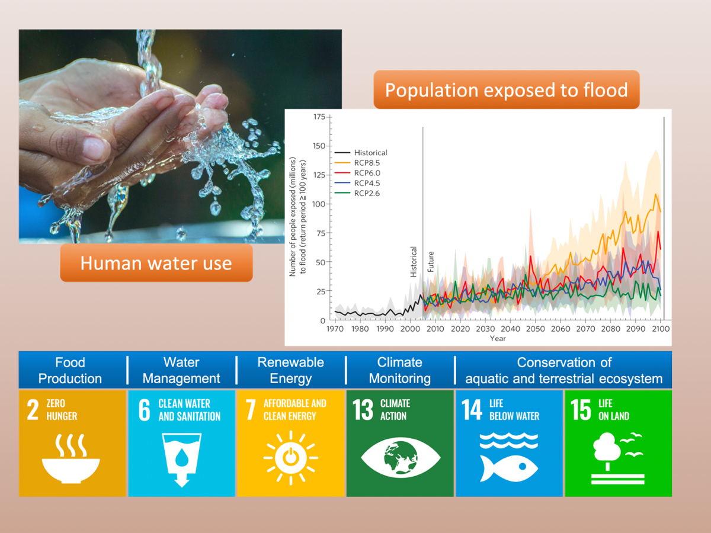
地球水循環と社会
水循環と気候システムや人間社会との関わりは？
どのように持続可能な社会を構築できるか？
地球規模課題に対処するための解決策を探ります。